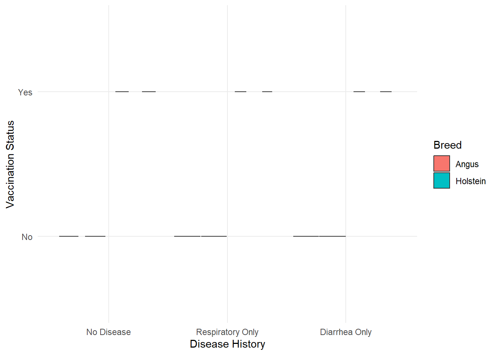
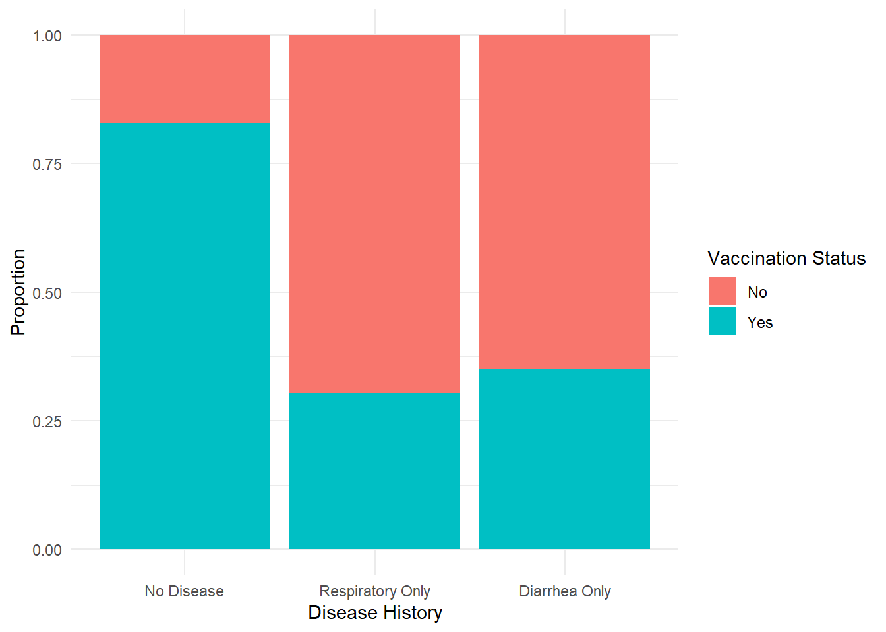
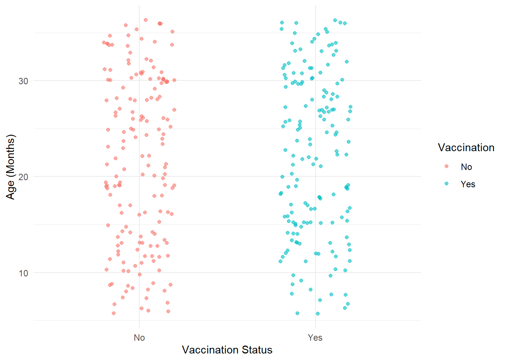
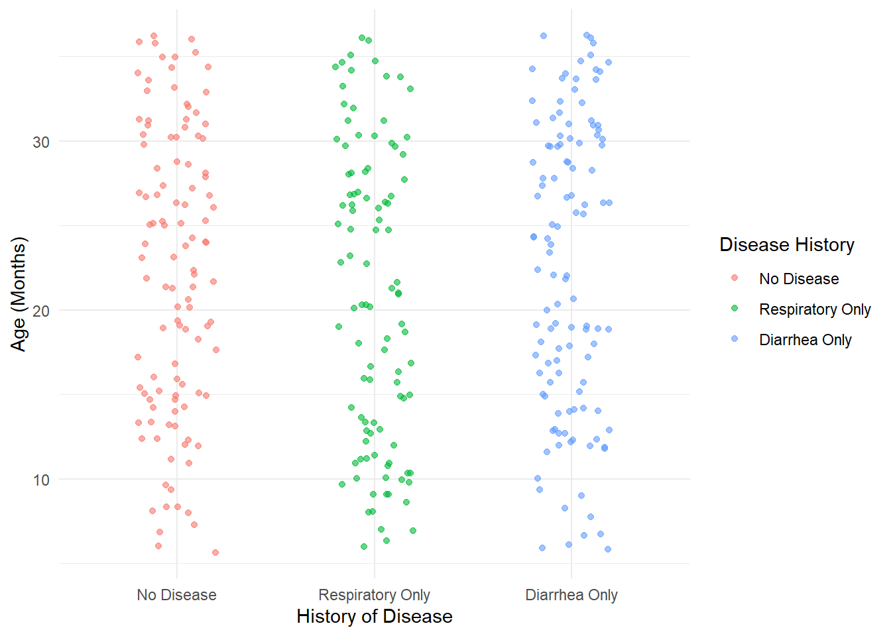
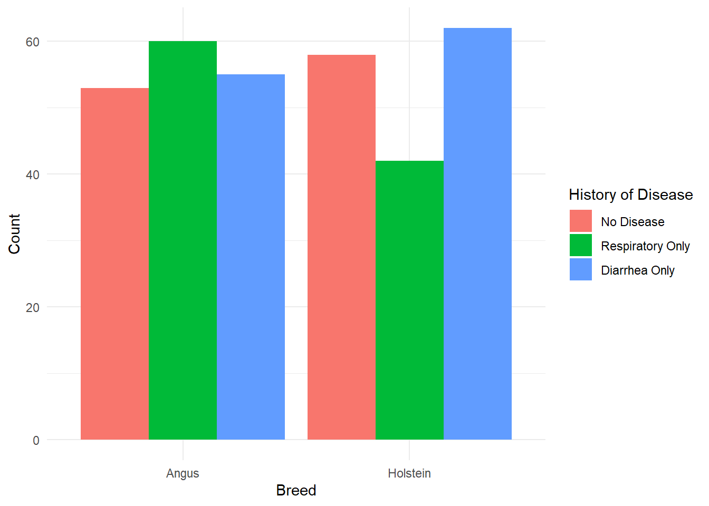

The following objects are masked from 'package:stats':
filter, lag
The following objects are masked from 'package:base':
intersect, setdiff, setequal, union
library(ggplot2)library(patchwork)
We are looking to generate a synthetic dataset that evaluates the relationship between vaccination status and history of disease within and to compare thi between different cattle breeds (beef vs dairy breeds). We are going to generate a dataset with 330 individual animals from the age of 6 months to 3 years. Since females are found in higher numbers in cattle production systems we are generating the dataset with 70% females (30% males). We are looking at vaccination as yes or no without specifying specific diseases or vaccines. We will generate columns for history of respiratory disease and history of diarrheal disease (either yes or no).
We first need to set the seed to that our random generation of variables is repeatable
set.seed(123)
We will start to generate our dataset as described:
#Start by assigning the number of cattle (observations)n <-330#We will assign ages to the animals between 6 months and 3 years (18 months). Age can only be integers (whole numbers in months)age <-sample(6:36, n, replace =TRUE)#we will assign the sex with 70% as females as mentionedsex <-sample(c("Female", "Male"), n, replace=TRUE, prob =c(0.7, 0.3))#We will assign the cattle breeds with an equal split using Angus as the beef breed and Holstein as the dairy breedbreed <-sample(c("Angus", "Holstein"), n, replace =TRUE)#We will classify these breeds to help with further interpretation and analysis downstream. This would be particularly helpful if we had multiple different breeds for each category in the dataset. We will use the if else function in R.breed_type <-ifelse(breed=="Angus", "Beef", "Dairy")#Double check that our breed data workedView(breed_type)print(breed_type)
We must now generate the vaccination and disease history data before we can produce our dataframe.
We will make the incidence of respiratory disease slightly higher in beef animals than in dairy animals, and the opposite (slightly higher incidence of diarrheal disease in dairy animals than beef animals).
#We will assign vaccination status (yes/no) randomlyvaccination <-sample (c("Yes","No"), n, replace =TRUE)#Assign history of diseases based on our assumptions#Start by generating a vector for the history of disease - diarrhea or respiratoryhistory_diarrhea <-rep("No", n)history_respiratory <-rep("No", n)#Using a loop function to change the incidence of the different diseases in beef and dairy breeds as mentioned above#I had chatGPT help me to generate the code for thisfor (i in1:n) {if (breed[i] =="Holstein") {if (runif(1) <0.35) history_diarrhea[i] <-"Yes"if (runif(1) <0.25) history_respiratory[i] <-"Yes" } else {if (runif(1) <0.30) history_diarrhea[i] <-"Yes"if (runif(1) <0.35) history_respiratory[i] <-"Yes" }}#We are applying the conditions above if the breed is Holstein and if it is not then we apply the conditions below the else.#We now want to make sure that animals that are not vaccinated have a higher incidence of disease (vaccination is correlated with freedom from or reduced incidence of disease)#We will use another loop funciton for this.# I had ChatGPT assist with this code for the loopfor (i in1:n) {if (vaccination[i] =="No"&& history_diarrhea[i] =="No"&& history_respiratory[i] =="No") {if (runif(1) <0.5) { history_diarrhea[i] <-"Yes" } else { history_respiratory[i] <-"Yes" } }}
We want to make four different categories that will help us to evaluate the different disease states that are possible. Different states are “Respiratory disease”, “Diarrhea disease”, “Both diseases”, and “No disease”. We will create an additional column for this to make it easier for us to call back to this for later models and plots. This could have been done as a second or separate dataframe without including it in the main datframe if we preferred. For ease it has been done now for less separate steps.
We then create a dataframe with all of these variables that we have assigned. We will call this cattle_data. We change the font of the column names to help use define searches and functions more directly.
Age Sex Breed Breed_Type
Min. : 6.00 Length:330 Length:330 Length:330
1st Qu.:14.00 Class :character Class :character Class :character
Median :22.00 Mode :character Mode :character Mode :character
Mean :21.84
3rd Qu.:30.00
Max. :36.00
Vaccination History_Diarrhea History_Respiratory
Length:330 Length:330 Length:330
Class :character Class :character Class :character
Mode :character Mode :character Mode :character
Disease_History
No Disease :111
Respiratory Only:102
Diarrhea Only :117
Both Diseases : 0
print(cattle_data)
Age Sex Breed Breed_Type Vaccination History_Diarrhea
1 36 Female Angus Beef No Yes
2 20 Female Angus Beef No No
3 24 Female Angus Beef Yes Yes
4 19 Female Holstein Dairy No Yes
5 8 Female Holstein Dairy Yes No
6 15 Male Holstein Dairy Yes No
7 23 Female Holstein Dairy No Yes
8 27 Female Angus Beef No No
9 16 Female Holstein Dairy Yes No
10 10 Female Angus Beef Yes No
11 25 Male Angus Beef No Yes
12 19 Female Angus Beef No Yes
13 27 Female Holstein Dairy Yes No
14 30 Female Angus Beef No No
15 31 Male Holstein Dairy Yes No
16 32 Female Holstein Dairy Yes Yes
17 10 Female Angus Beef Yes No
18 24 Female Holstein Dairy No Yes
19 32 Male Angus Beef No No
20 30 Female Holstein Dairy Yes Yes
21 33 Female Angus Beef Yes Yes
22 30 Male Angus Beef No Yes
23 14 Female Holstein Dairy Yes No
24 34 Female Holstein Dairy No No
25 8 Male Holstein Dairy No No
26 13 Female Holstein Dairy No Yes
27 31 Female Holstein Dairy Yes Yes
28 12 Female Holstein Dairy Yes Yes
29 15 Female Holstein Dairy Yes No
30 14 Female Holstein Dairy No Yes
31 35 Female Angus Beef No No
32 24 Male Angus Beef No Yes
33 9 Female Angus Beef Yes No
34 19 Female Holstein Dairy No No
35 22 Male Angus Beef No Yes
36 16 Male Angus Beef Yes Yes
37 12 Female Angus Beef Yes No
38 26 Female Holstein Dairy Yes No
39 17 Male Holstein Dairy Yes No
40 20 Female Angus Beef Yes No
41 15 Male Holstein Dairy Yes No
42 18 Female Angus Beef Yes Yes
43 12 Male Holstein Dairy No Yes
44 14 Female Angus Beef No Yes
45 14 Male Holstein Dairy No Yes
46 15 Female Holstein Dairy No Yes
47 28 Female Holstein Dairy No Yes
48 32 Female Angus Beef Yes Yes
49 33 Female Angus Beef Yes No
50 26 Male Holstein Dairy No No
51 12 Female Holstein Dairy No Yes
52 26 Male Holstein Dairy No Yes
53 32 Male Holstein Dairy Yes No
54 11 Female Holstein Dairy No No
55 30 Female Angus Beef Yes No
56 7 Female Angus Beef No No
57 34 Female Holstein Dairy No Yes
58 10 Female Angus Beef No No
59 13 Male Holstein Dairy No Yes
60 17 Male Angus Beef No Yes
61 36 Female Angus Beef Yes No
62 18 Male Angus Beef Yes Yes
63 23 Female Angus Beef Yes No
64 6 Female Angus Beef No Yes
65 30 Female Holstein Dairy No Yes
66 32 Male Holstein Dairy No Yes
67 30 Female Angus Beef Yes Yes
68 11 Female Holstein Dairy Yes No
69 26 Female Angus Beef Yes Yes
70 20 Female Angus Beef No No
71 14 Male Angus Beef Yes Yes
72 20 Female Holstein Dairy No Yes
73 31 Female Angus Beef Yes No
74 33 Female Angus Beef Yes No
75 36 Female Angus Beef No No
76 21 Male Angus Beef No Yes
77 25 Female Holstein Dairy Yes No
78 35 Female Angus Beef Yes Yes
79 11 Female Holstein Dairy No No
80 16 Female Holstein Dairy No No
81 13 Female Holstein Dairy Yes Yes
82 27 Female Angus Beef Yes No
83 27 Female Angus Beef Yes No
84 12 Male Angus Beef No Yes
85 36 Female Holstein Dairy Yes No
86 21 Female Holstein Dairy Yes No
87 22 Female Angus Beef Yes Yes
88 27 Female Holstein Dairy Yes No
89 23 Male Angus Beef No No
90 22 Male Holstein Dairy Yes No
91 7 Female Angus Beef No Yes
92 9 Female Holstein Dairy Yes Yes
93 18 Male Holstein Dairy No No
94 10 Female Holstein Dairy Yes No
95 27 Female Holstein Dairy No Yes
96 36 Female Holstein Dairy No Yes
97 24 Female Holstein Dairy Yes No
98 30 Female Holstein Dairy No Yes
99 25 Female Holstein Dairy No No
100 27 Female Angus Beef Yes Yes
101 30 Female Angus Beef Yes No
102 19 Male Holstein Dairy Yes No
103 30 Female Angus Beef Yes Yes
104 28 Male Angus Beef No Yes
105 8 Male Holstein Dairy No No
106 13 Male Angus Beef Yes No
107 21 Female Angus Beef Yes No
108 35 Female Holstein Dairy Yes Yes
109 17 Female Holstein Dairy Yes No
110 36 Female Angus Beef No Yes
111 30 Female Angus Beef Yes Yes
112 19 Female Angus Beef No Yes
113 35 Female Angus Beef No Yes
114 8 Female Angus Beef No Yes
115 19 Male Angus Beef Yes No
116 34 Male Holstein Dairy No Yes
117 12 Male Holstein Dairy No Yes
118 8 Female Holstein Dairy No Yes
119 28 Female Holstein Dairy No No
120 27 Male Angus Beef Yes No
121 31 Female Holstein Dairy No Yes
122 20 Female Angus Beef Yes No
123 26 Female Holstein Dairy Yes No
124 10 Female Angus Beef No No
125 13 Female Angus Beef No No
126 24 Female Angus Beef Yes Yes
127 15 Female Holstein Dairy Yes Yes
128 23 Female Holstein Dairy Yes No
129 15 Male Holstein Dairy Yes No
130 17 Female Angus Beef Yes No
131 7 Male Angus Beef Yes No
132 15 Female Holstein Dairy Yes No
133 27 Male Holstein Dairy No Yes
134 36 Female Angus Beef No Yes
135 17 Female Angus Beef Yes Yes
136 25 Female Angus Beef Yes Yes
137 19 Female Angus Beef No Yes
138 22 Female Angus Beef Yes Yes
139 35 Male Angus Beef Yes Yes
140 19 Female Angus Beef Yes No
141 27 Male Angus Beef No No
142 8 Female Angus Beef Yes No
143 13 Female Angus Beef No Yes
144 19 Male Holstein Dairy No Yes
145 24 Female Angus Beef No Yes
146 35 Female Holstein Dairy No Yes
147 20 Female Angus Beef No Yes
148 29 Female Holstein Dairy No Yes
149 22 Male Holstein Dairy No Yes
150 28 Male Angus Beef Yes No
151 16 Female Holstein Dairy No No
152 12 Female Holstein Dairy Yes No
153 34 Male Angus Beef Yes No
154 20 Female Angus Beef No Yes
155 28 Male Holstein Dairy No No
156 31 Female Holstein Dairy Yes No
157 11 Female Angus Beef No No
158 19 Female Holstein Dairy Yes No
159 36 Male Angus Beef Yes No
160 12 Female Holstein Dairy No Yes
161 32 Female Holstein Dairy No Yes
162 15 Female Holstein Dairy Yes No
163 10 Female Angus Beef No No
164 11 Female Angus Beef Yes No
165 21 Female Holstein Dairy No No
166 29 Female Holstein Dairy Yes Yes
167 26 Female Holstein Dairy Yes No
168 28 Male Angus Beef No No
169 16 Female Angus Beef No No
170 9 Female Holstein Dairy No Yes
171 17 Female Angus Beef No No
172 19 Male Holstein Dairy No No
173 33 Female Holstein Dairy No No
174 34 Male Holstein Dairy No Yes
175 24 Female Holstein Dairy No Yes
176 30 Female Angus Beef No Yes
177 12 Male Holstein Dairy No Yes
178 27 Female Holstein Dairy Yes Yes
179 31 Male Angus Beef Yes No
180 14 Female Angus Beef Yes No
181 12 Female Holstein Dairy Yes Yes
182 7 Female Holstein Dairy Yes No
183 21 Female Angus Beef Yes No
184 18 Female Angus Beef Yes No
185 24 Female Angus Beef No Yes
186 29 Male Angus Beef No Yes
187 25 Female Angus Beef No No
188 20 Male Angus Beef Yes No
189 12 Female Angus Beef Yes No
190 9 Male Angus Beef No No
191 6 Female Angus Beef No Yes
192 13 Female Angus Beef Yes No
193 35 Male Holstein Dairy No No
194 35 Female Angus Beef Yes No
195 25 Male Angus Beef Yes Yes
196 30 Female Angus Beef Yes No
197 21 Male Holstein Dairy No Yes
198 29 Female Holstein Dairy Yes No
199 27 Female Holstein Dairy Yes No
200 16 Male Holstein Dairy Yes Yes
201 21 Female Holstein Dairy No No
202 25 Male Holstein Dairy No No
203 13 Female Holstein Dairy Yes No
204 8 Male Holstein Dairy Yes No
205 34 Male Angus Beef Yes No
206 9 Female Angus Beef No No
207 25 Male Holstein Dairy Yes Yes
208 17 Male Holstein Dairy Yes Yes
209 27 Female Angus Beef Yes No
210 22 Female Holstein Dairy Yes No
211 15 Female Angus Beef Yes No
212 32 Female Angus Beef No No
213 25 Male Angus Beef Yes No
214 16 Female Angus Beef No Yes
215 30 Female Angus Beef Yes No
216 28 Female Angus Beef Yes Yes
217 13 Female Holstein Dairy No Yes
218 19 Female Holstein Dairy No Yes
219 26 Female Angus Beef No No
220 18 Female Angus Beef No No
221 7 Male Holstein Dairy No No
222 16 Male Holstein Dairy No No
223 18 Female Angus Beef No No
224 19 Female Angus Beef Yes Yes
225 11 Female Angus Beef Yes No
226 30 Female Holstein Dairy No Yes
227 13 Male Angus Beef No No
228 17 Female Angus Beef Yes Yes
229 31 Male Holstein Dairy No No
230 9 Female Holstein Dairy No No
231 18 Male Holstein Dairy Yes Yes
232 34 Female Angus Beef Yes No
233 19 Female Angus Beef No Yes
234 26 Male Holstein Dairy No Yes
235 21 Male Holstein Dairy No No
236 28 Female Holstein Dairy No No
237 34 Female Angus Beef No Yes
238 6 Female Angus Beef No Yes
239 13 Female Holstein Dairy Yes No
240 13 Male Holstein Dairy Yes No
241 15 Male Angus Beef No No
242 30 Male Angus Beef No Yes
243 13 Female Angus Beef No No
244 23 Male Holstein Dairy Yes No
245 34 Female Holstein Dairy No Yes
246 26 Female Angus Beef Yes No
247 14 Female Angus Beef Yes No
248 12 Male Holstein Dairy Yes No
249 12 Female Angus Beef Yes No
250 31 Female Angus Beef No Yes
251 34 Female Holstein Dairy Yes No
252 33 Male Angus Beef Yes Yes
253 15 Female Holstein Dairy No Yes
254 29 Female Angus Beef Yes No
255 36 Male Angus Beef Yes No
256 27 Female Holstein Dairy Yes No
257 28 Female Holstein Dairy Yes No
258 31 Male Angus Beef Yes Yes
259 16 Female Holstein Dairy Yes Yes
260 6 Female Holstein Dairy Yes Yes
261 30 Female Holstein Dairy No No
262 34 Female Holstein Dairy No Yes
263 34 Female Holstein Dairy Yes No
264 24 Female Holstein Dairy Yes Yes
265 15 Male Holstein Dairy Yes No
266 26 Female Angus Beef Yes No
267 27 Male Angus Beef Yes No
268 18 Female Holstein Dairy Yes Yes
269 16 Female Angus Beef No Yes
270 16 Female Holstein Dairy Yes No
271 30 Female Holstein Dairy Yes No
272 25 Female Angus Beef Yes No
273 31 Male Angus Beef No No
274 12 Female Holstein Dairy No Yes
275 30 Male Angus Beef No No
276 28 Male Holstein Dairy Yes Yes
277 31 Male Holstein Dairy No Yes
278 25 Male Angus Beef No No
279 34 Female Angus Beef Yes No
280 29 Male Angus Beef Yes No
281 30 Male Holstein Dairy No No
282 14 Male Angus Beef No No
283 14 Female Holstein Dairy No Yes
284 10 Female Holstein Dairy No No
285 28 Female Holstein Dairy No No
286 19 Female Angus Beef No Yes
287 19 Male Angus Beef No No
288 11 Female Angus Beef No No
289 32 Female Angus Beef Yes No
290 6 Male Angus Beef Yes No
291 31 Male Angus Beef No Yes
292 15 Female Angus Beef Yes No
293 22 Male Holstein Dairy No Yes
294 31 Female Holstein Dairy Yes No
295 22 Female Holstein Dairy Yes Yes
296 34 Male Angus Beef No Yes
297 31 Male Angus Beef No Yes
298 32 Male Angus Beef Yes No
299 26 Female Angus Beef No Yes
300 12 Female Holstein Dairy Yes No
301 33 Male Angus Beef Yes No
302 26 Male Holstein Dairy No Yes
303 31 Female Holstein Dairy No Yes
304 14 Female Angus Beef No No
305 25 Female Angus Beef No Yes
306 11 Male Holstein Dairy No Yes
307 23 Female Angus Beef No No
308 35 Female Holstein Dairy Yes No
309 36 Female Angus Beef Yes No
310 34 Male Holstein Dairy No Yes
311 22 Male Holstein Dairy Yes No
312 10 Female Holstein Dairy Yes Yes
313 30 Female Angus Beef No No
314 25 Male Holstein Dairy Yes No
315 8 Male Angus Beef Yes Yes
316 30 Male Angus Beef No Yes
317 19 Female Holstein Dairy Yes Yes
318 6 Female Holstein Dairy Yes No
319 7 Female Holstein Dairy No Yes
320 9 Male Angus Beef No No
321 15 Male Holstein Dairy Yes No
322 6 Female Angus Beef No No
323 10 Male Holstein Dairy No No
324 26 Female Angus Beef No Yes
325 30 Female Angus Beef Yes Yes
326 13 Male Holstein Dairy No No
327 28 Female Holstein Dairy No Yes
328 30 Female Holstein Dairy No Yes
329 26 Female Holstein Dairy No No
330 18 Female Angus Beef Yes Yes
History_Respiratory Disease_History
1 No Diarrhea Only
2 Yes Respiratory Only
3 No Diarrhea Only
4 No Diarrhea Only
5 No No Disease
6 No No Disease
7 No Diarrhea Only
8 Yes Respiratory Only
9 No No Disease
10 Yes Respiratory Only
11 Yes No Disease
12 Yes No Disease
13 Yes Respiratory Only
14 Yes Respiratory Only
15 No No Disease
16 No Diarrhea Only
17 Yes Respiratory Only
18 Yes No Disease
19 Yes Respiratory Only
20 No Diarrhea Only
21 No Diarrhea Only
22 No Diarrhea Only
23 No No Disease
24 Yes Respiratory Only
25 Yes Respiratory Only
26 No Diarrhea Only
27 No Diarrhea Only
28 Yes No Disease
29 Yes Respiratory Only
30 No Diarrhea Only
31 Yes Respiratory Only
32 No Diarrhea Only
33 No No Disease
34 Yes Respiratory Only
35 Yes No Disease
36 Yes No Disease
37 Yes Respiratory Only
38 No No Disease
39 Yes Respiratory Only
40 No No Disease
41 No No Disease
42 Yes No Disease
43 No Diarrhea Only
44 No Diarrhea Only
45 No Diarrhea Only
46 No Diarrhea Only
47 No Diarrhea Only
48 No Diarrhea Only
49 No No Disease
50 Yes Respiratory Only
51 No Diarrhea Only
52 No Diarrhea Only
53 No No Disease
54 Yes Respiratory Only
55 Yes Respiratory Only
56 Yes Respiratory Only
57 No Diarrhea Only
58 Yes Respiratory Only
59 No Diarrhea Only
60 No Diarrhea Only
61 No No Disease
62 No Diarrhea Only
63 Yes Respiratory Only
64 No Diarrhea Only
65 No Diarrhea Only
66 No Diarrhea Only
67 Yes No Disease
68 No No Disease
69 No Diarrhea Only
70 Yes Respiratory Only
71 No Diarrhea Only
72 No Diarrhea Only
73 No No Disease
74 No No Disease
75 Yes Respiratory Only
76 No Diarrhea Only
77 No No Disease
78 No Diarrhea Only
79 Yes Respiratory Only
80 Yes Respiratory Only
81 No Diarrhea Only
82 Yes Respiratory Only
83 No No Disease
84 No Diarrhea Only
85 No No Disease
86 No No Disease
87 No Diarrhea Only
88 No No Disease
89 Yes Respiratory Only
90 No No Disease
91 No Diarrhea Only
92 No Diarrhea Only
93 Yes Respiratory Only
94 No No Disease
95 No Diarrhea Only
96 No Diarrhea Only
97 No No Disease
98 Yes No Disease
99 Yes Respiratory Only
100 No Diarrhea Only
101 No No Disease
102 No No Disease
103 No Diarrhea Only
104 No Diarrhea Only
105 Yes Respiratory Only
106 Yes Respiratory Only
107 No No Disease
108 Yes No Disease
109 No No Disease
110 No Diarrhea Only
111 No Diarrhea Only
112 No Diarrhea Only
113 No Diarrhea Only
114 No Diarrhea Only
115 No No Disease
116 No Diarrhea Only
117 No Diarrhea Only
118 Yes No Disease
119 Yes Respiratory Only
120 Yes Respiratory Only
121 No Diarrhea Only
122 Yes Respiratory Only
123 Yes Respiratory Only
124 Yes Respiratory Only
125 Yes Respiratory Only
126 Yes No Disease
127 No Diarrhea Only
128 No No Disease
129 No No Disease
130 No No Disease
131 No No Disease
132 No No Disease
133 No Diarrhea Only
134 No Diarrhea Only
135 No Diarrhea Only
136 Yes No Disease
137 No Diarrhea Only
138 No Diarrhea Only
139 No Diarrhea Only
140 No No Disease
141 Yes Respiratory Only
142 No No Disease
143 No Diarrhea Only
144 No Diarrhea Only
145 Yes No Disease
146 Yes No Disease
147 No Diarrhea Only
148 No Diarrhea Only
149 No Diarrhea Only
150 No No Disease
151 Yes Respiratory Only
152 No No Disease
153 Yes Respiratory Only
154 Yes No Disease
155 Yes Respiratory Only
156 No No Disease
157 Yes Respiratory Only
158 No No Disease
159 No No Disease
160 No Diarrhea Only
161 No Diarrhea Only
162 Yes Respiratory Only
163 Yes Respiratory Only
164 Yes Respiratory Only
165 Yes Respiratory Only
166 No Diarrhea Only
167 No No Disease
168 Yes Respiratory Only
169 Yes Respiratory Only
170 No Diarrhea Only
171 Yes Respiratory Only
172 Yes Respiratory Only
173 Yes Respiratory Only
174 No Diarrhea Only
175 Yes No Disease
176 No Diarrhea Only
177 No Diarrhea Only
178 No Diarrhea Only
179 No No Disease
180 No No Disease
181 No Diarrhea Only
182 No No Disease
183 No No Disease
184 No No Disease
185 No Diarrhea Only
186 No Diarrhea Only
187 Yes Respiratory Only
188 Yes Respiratory Only
189 No No Disease
190 Yes Respiratory Only
191 Yes No Disease
192 No No Disease
193 Yes Respiratory Only
194 No No Disease
195 No Diarrhea Only
196 No No Disease
197 Yes No Disease
198 Yes Respiratory Only
199 No No Disease
200 No Diarrhea Only
201 Yes Respiratory Only
202 Yes Respiratory Only
203 No No Disease
204 No No Disease
205 Yes Respiratory Only
206 Yes Respiratory Only
207 Yes No Disease
208 No Diarrhea Only
209 No No Disease
210 No No Disease
211 No No Disease
212 Yes Respiratory Only
213 No No Disease
214 No Diarrhea Only
215 No No Disease
216 Yes No Disease
217 No Diarrhea Only
218 No Diarrhea Only
219 Yes Respiratory Only
220 Yes Respiratory Only
221 Yes Respiratory Only
222 Yes Respiratory Only
223 Yes Respiratory Only
224 No Diarrhea Only
225 Yes Respiratory Only
226 No Diarrhea Only
227 Yes Respiratory Only
228 No Diarrhea Only
229 Yes Respiratory Only
230 Yes Respiratory Only
231 No Diarrhea Only
232 No No Disease
233 No Diarrhea Only
234 No Diarrhea Only
235 Yes Respiratory Only
236 Yes Respiratory Only
237 No Diarrhea Only
238 No Diarrhea Only
239 No No Disease
240 No No Disease
241 Yes Respiratory Only
242 No Diarrhea Only
243 Yes Respiratory Only
244 No No Disease
245 No Diarrhea Only
246 Yes Respiratory Only
247 No No Disease
248 Yes Respiratory Only
249 No No Disease
250 No Diarrhea Only
251 No No Disease
252 Yes No Disease
253 No Diarrhea Only
254 No No Disease
255 Yes Respiratory Only
256 No No Disease
257 No No Disease
258 No Diarrhea Only
259 No Diarrhea Only
260 No Diarrhea Only
261 Yes Respiratory Only
262 No Diarrhea Only
263 No No Disease
264 No Diarrhea Only
265 No No Disease
266 Yes Respiratory Only
267 No No Disease
268 No Diarrhea Only
269 No Diarrhea Only
270 No No Disease
271 Yes Respiratory Only
272 Yes Respiratory Only
273 Yes Respiratory Only
274 No Diarrhea Only
275 Yes Respiratory Only
276 No Diarrhea Only
277 Yes No Disease
278 Yes Respiratory Only
279 Yes Respiratory Only
280 No No Disease
281 Yes Respiratory Only
282 Yes Respiratory Only
283 No Diarrhea Only
284 Yes Respiratory Only
285 Yes Respiratory Only
286 Yes No Disease
287 Yes Respiratory Only
288 Yes Respiratory Only
289 No No Disease
290 Yes Respiratory Only
291 No Diarrhea Only
292 No No Disease
293 Yes No Disease
294 No No Disease
295 No Diarrhea Only
296 No Diarrhea Only
297 No Diarrhea Only
298 No No Disease
299 No Diarrhea Only
300 No No Disease
301 Yes Respiratory Only
302 Yes No Disease
303 No Diarrhea Only
304 Yes Respiratory Only
305 No Diarrhea Only
306 Yes No Disease
307 Yes Respiratory Only
308 Yes Respiratory Only
309 No No Disease
310 Yes No Disease
311 Yes Respiratory Only
312 No Diarrhea Only
313 Yes Respiratory Only
314 No No Disease
315 No Diarrhea Only
316 Yes No Disease
317 No Diarrhea Only
318 No No Disease
319 No Diarrhea Only
320 Yes Respiratory Only
321 No No Disease
322 Yes Respiratory Only
323 Yes Respiratory Only
324 No Diarrhea Only
325 No Diarrhea Only
326 Yes Respiratory Only
327 No Diarrhea Only
328 No Diarrhea Only
329 Yes Respiratory Only
330 No Diarrhea Only
We want to changed the categorical variables (most of our variables) to factors
We will now use logistic regression models to evaluate our data and hopefully see the patterns that we expect. We will also produce some plots to evaluate the data.
First model: geometric logistic regression to test the association between vaccination and disease history (our main association of interest)
model1 <-glm(Vaccination ~ Disease_History + Breed, data = cattle_data, family = binomial)summary(model1)
Call:
glm(formula = Vaccination ~ Disease_History + Breed, family = binomial,
data = cattle_data)
Coefficients:
Estimate Std. Error z value Pr(>|z|)
(Intercept) 1.7733 0.2925 6.062 1.35e-09 ***
Disease_HistoryRespiratory Only -2.4618 0.3363 -7.321 2.47e-13 ***
Disease_HistoryDiarrhea Only -2.2069 0.3193 -6.911 4.82e-12 ***
BreedHolstein -0.3552 0.2543 -1.397 0.162
---
Signif. codes: 0 '***' 0.001 '**' 0.01 '*' 0.05 '.' 0.1 ' ' 1
(Dispersion parameter for binomial family taken to be 1)
Null deviance: 457.47 on 329 degrees of freedom
Residual deviance: 376.50 on 326 degrees of freedom
AIC: 384.5
Number of Fisher Scoring iterations: 4
From the results of this model we can see that the absence of vaccination is strongly and statistically associated with the presence of both respiratory and diarrheal disease in caatle in the dataset. However there is not a statistically significant association/effect between breed and vaccination.
Second model: geometric logistic regression to test the effect of breed on respiratory disease (we expect beef breeds to have a higher incidence than dairy)
Logistic regression testing the effect of breed on disease history. We would need to use a multinomial regression here if we want to test disease history with both respiratory and diarrheal disease in the same model, so instead we will evaluate diarrheal disease and respiratory disease separately using binomial models.
Second model: Geometric logistic regression testing the effect of breed on respiratory disease history (we expect respiratory disease to be slightly higher in beef breeds).
model2 <-glm(History_Respiratory ~ Breed + Age, data = cattle_data, family = binomial)summary(model2)
Call:
glm(formula = History_Respiratory ~ Breed + Age, family = binomial,
data = cattle_data)
Coefficients:
Estimate Std. Error z value Pr(>|z|)
(Intercept) 0.08072 0.33356 0.242 0.8088
BreedHolstein -0.44122 0.22784 -1.937 0.0528 .
Age -0.01319 0.01319 -1.000 0.3172
---
Signif. codes: 0 '***' 0.001 '**' 0.01 '*' 0.05 '.' 0.1 ' ' 1
(Dispersion parameter for binomial family taken to be 1)
Null deviance: 443.36 on 329 degrees of freedom
Residual deviance: 438.85 on 327 degrees of freedom
AIC: 444.85
Number of Fisher Scoring iterations: 4
Third model: geometric logistic regression to test the effect of breed on diarrhea disease (we expect dairy breeds to have a higher incidence than beef)
model3 <-glm(History_Diarrhea ~ Breed + Age, data = cattle_data, family = binomial)summary(model3)
Call:
glm(formula = History_Diarrhea ~ Breed + Age, family = binomial,
data = cattle_data)
Coefficients:
Estimate Std. Error z value Pr(>|z|)
(Intercept) -0.79869 0.33562 -2.380 0.0173 *
BreedHolstein 0.24110 0.22365 1.078 0.2810
Age 0.02044 0.01304 1.568 0.1169
---
Signif. codes: 0 '***' 0.001 '**' 0.01 '*' 0.05 '.' 0.1 ' ' 1
(Dispersion parameter for binomial family taken to be 1)
Null deviance: 453.09 on 329 degrees of freedom
Residual deviance: 449.69 on 327 degrees of freedom
AIC: 455.69
Number of Fisher Scoring iterations: 4
Fourth model: linear logistic regression to test age differences across vaccination status (we do not expect correlation in our dataset)
model4 <-lm(Age ~ Vaccination, data = cattle_data)summary(model4)
Call:
lm(formula = Age ~ Vaccination, data = cattle_data)
Residuals:
Min 1Q Median 3Q Max
-16.1402 -7.5482 0.1558 7.8598 14.4518
Coefficients:
Estimate Std. Error t value Pr(>|t|)
(Intercept) 21.5482 0.6701 32.155 <2e-16 ***
VaccinationYes 0.5921 0.9506 0.623 0.534
---
Signif. codes: 0 '***' 0.001 '**' 0.01 '*' 0.05 '.' 0.1 ' ' 1
Residual standard error: 8.634 on 328 degrees of freedom
Multiple R-squared: 0.001181, Adjusted R-squared: -0.001864
F-statistic: 0.3879 on 1 and 328 DF, p-value: 0.5338
Fifth model: linear logistic regression to test age differences across disease history (we do not expect correlation in our dataset)
model5 <-lm(Age ~ Disease_History, data = cattle_data)summary(model5)
Call:
lm(formula = Age ~ Disease_History, data = cattle_data)
Residuals:
Min 1Q Median 3Q Max
-16.4615 -7.4615 0.2255 7.5385 15.2255
Coefficients:
Estimate Std. Error t value Pr(>|t|)
(Intercept) 22.1712 0.8183 27.093 <2e-16 ***
Disease_HistoryRespiratory Only -1.3967 1.1825 -1.181 0.238
Disease_HistoryDiarrhea Only 0.2904 1.1424 0.254 0.800
---
Signif. codes: 0 '***' 0.001 '**' 0.01 '*' 0.05 '.' 0.1 ' ' 1
Residual standard error: 8.622 on 327 degrees of freedom
Multiple R-squared: 0.007074, Adjusted R-squared: 0.001001
F-statistic: 1.165 on 2 and 327 DF, p-value: 0.3133
Plotting our graphs to see how they compare with our associations seen in the linear regression models
First plot: Violin plot to compare disease history with the vaccination status per breed
p1 <-ggplot(cattle_data, aes(x = Disease_History, y = Vaccination, fill = Breed)) +geom_violin() +labs(x ="Disease History", y ="Vaccination Status", fill ="Breed") +theme_minimal()print(p1)

This violin plot doesn’t really display this data well. We will produce a bar plot instead.
Generate a bar plot to evaluate the relationship between vaccination status and disease history by comparing the proportions of animals with history of disease and vaccination status. We are working with proportion instead of count to make interpretation easier.
p2 <-ggplot(cattle_data, aes(x = Disease_History, fill = Vaccination)) +geom_bar(position ="fill") +labs(x ="Disease History", y ="Proportion", fill ="Vaccination Status") +theme_minimal()print(p2)

Third plot: Scatter plot of age vs vaccination status
p3 <-ggplot(cattle_data, aes(x = Vaccination, y = Age, color = Vaccination)) +geom_jitter(width =0.2, alpha =0.6) +labs(x ="Vaccination Status", y ="Age (Months)") +theme_minimal()print(p3)

Vaccination status does not show any obvious relationship with age.
Fourth plot: Scatter plot of age vs History of infection (respiratory and diarrheal)
p4 <-ggplot(cattle_data, aes(x = Disease_History, y = Age, color = Disease_History)) +geom_jitter(width =0.2, alpha =0.6) +labs(x ="History of Disease", y ="Age (Months)", color ="Disease History") +theme_minimal()print(p4)

Fifth plot: Bar plot comparing disease history across all breeds
p5 <-ggplot(cattle_data, aes(x = Breed, fill = Disease_History)) +geom_bar(position ="dodge") +labs(x ="Breed", y ="Count", fill ="History of Disease") +theme_minimal()print(p5)

From the graphs we once again see that there is no obvious relationship between disease status and age (as we created in the synthetic data, which might differ from real life evaluations). We do see that there is slightly higher incidence of respiratory disease in beef animals, and diarrhea disease in dairy animals.
In summary, our models used for evalaution work well and we produce the expected results from this synthetic dataset. There are some aspects of the synthetic dataset that could be worked on further to make it more closely resemble and model a real-world situation, and then we might need more evaluation. However, as a proof of concept this is helpful at this stage.